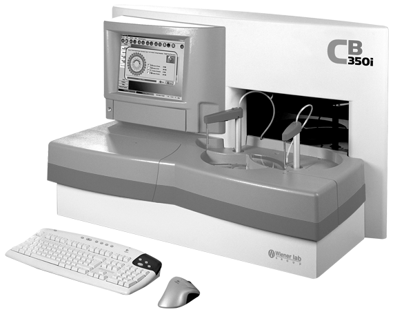

CB 350i

ESPECIFICACIONES TÉCNICAS:
• Autoanalizador para química clínica “Random Access”.
• Sistema abierto, discreto, multiparamétrico, selectivo, carga continua, “Walk away”.
• Dispositivo compacto “sobremesada”.
• Velocidad máxima: 534 test/hora totales (Fotométricos: 330 test/hora + ISE: 204 test/hora).
• Consumo típico de reactivos: 300 ul.
• Posibilidad de trabajar con 1 o 2 reactivos por técnica.
• Modos de trabajo: Random Access, Batch, STAT.
• Metodologías: Punto final, dos puntos, cinético. Mono o bicromático. Con blanco de reactivo y/o muestra. Látex. Sólo lectura.
• Calibración: Con factor, standard, curvas multipunto; (lineal o no lineal).
• Módulo ISE incorporado para Na, K y Cl.
• Lavado automático de cubetas con bajo consumo de agua (< 2 litros/hora).
• Sin descartables.
Soporte de reactivos
• Hasta 80 parámetros pueden ser determinados simultáneamente.
• Bandeja de reactivos refrigerada con 40 canales (1 o 2 reactivos por canal).
• 4 tamaños posibles de frascos: 80, 50, 20 y 10 ml.
• Identificación por código de barras (lector incorporado).
Soporte de muestras
• Rotor con 78 posiciones programables totales: 52 pacientes (rutina+ urgencias) y 26 calibradores y/o controles.
• En copa de muestra y/o tubo primario.
• Carga continua.
• Identificación por código de barras (lector incorporado).
Sistema de dilución y pipeteo
• 2 Dilutores de cerámica, de larga duración (vol. 500 ul).
• 2 Brazos móviles con sonda para reactivo y muestra.
• Vol. programable de muestra 1 - 100 ul.
• Vol. programable de reactivo 5 - 500 ul.
• Vol. de reacción: 280 ul - 700 ul.
• Mezclado por vibración.
• Sensor de nivel de líquido para muestra y reactivo.
• Elemento termostatizador de sonda.
Sistema de incubación y lectura
• Rotor de 34 cubetas de vidrio óptico.
• Termostatización por sistema Saltier (30 o 37°C).
• Sistema de lavado de cubetas con bajo consumo de agua.
• Unidad de medida: Solid state photometry (patentado por Biotecnica Instruments).
• Lámpara halógena de tungsteno con reflector dicroico (12V - 35W).
• Filtros de lectura: 340, 380, 405, 436, 480, 510, 548, 578, 630 y 700 nm; más uno opcional.
• Precisión fotométrica: +/- 1% de 0 - 2.000 O.D.; +/- 2.5% de 2.000 - 2.400 O.D.
• Sensibilidad fotométrica: 0.0005 Abs.
Módulo ISE
• Electrodos de estado sólido para Na, K y Cl.
• Sistema hidráulico simple y efectivo.
• Brazo de muestreo independiente.
• 204 test/hora.
• Volumen de muestra: 30 ul.
• Orinas: Se procesan sin diluir.
• Rango de medición en suero:
Na+ 50-200 meq/L
Cl- 50-400 meq/L
K+ 1-20 meq/L
• Rango de medición en orina:
Na+ 20-200 meq/L
Cl- 40-400 meq/L
K+ 2-200 meq/L
Manejo de la información
• PC incorporada.
• Monitor LCD display module TFT 12” con touchscreen.
• Disco duro > 40GB.
• DVD/CD Rom Player.
• HUB-USB con 4 puertos (más PEN Drive).
• Interfaz: 2 puertos seriales RS232 C, 2 puertos USB, Bidirectional.
• Impresora externa: In-jet color IBM compatible.
• Código de barras para muestras y reactivos.
• Posibilidad de conexión a un Host.
Características del software
• Entorno Windows 2000 Professional®.
• Intuitivo, de fácil aprendizaje.
• Multilenguaje: español, portugués, italiano, inglés, alemán, francés, polaco.
• Teclas de función predefinida.
• Capacidad de programación: 500 test.
• Posibilidad de programar perfiles y urgencias.
• Redilución y reprocesamiento automático de muestras no lineales.
• Repetición automática de muestras patológicas.
• Predilución de muestras (sueros/orinas).
• Gráfico de todos los puntos de medición.
• Chequeos y alarmas automáticas durante la operación.
• Chequeo de linealidad, límites de absorbancia y consumo de sustrato.
• Monitoreo del volumen de muestra y reactivo “on line”.
• Control de calidad: 3 niveles conocidos + 3 niveles desconocidos.
• Estadísticas, gráficos de Levey-Jennings, Judem, XY, Trender, Histogramas.
Requerimientos ambientales
• Requerimientos eléctricos: 110/220 voltios 600 Watts.
• Dimensiones: Altura 68 cm, Ancho 100 cm, Prof. 58 cm.
• Peso: 110 kg.
• Condiciones de operación: 18-32°C, humedad relativa 10-90%.
DATOS COMPLEMENTARIOS: Para mayor información llamar a:
COMERCIALIZADORA DIFARMALAV, S.A. DE C.V.
Teléfonos: 01 222 594-3465, 755-3753, 755-3752
Lada sin costo: 01 800 DIFARMA, 01 800 161-6707
(01 800 343 2762)
e-mail: difarmaventas@hotmail.com
www.difarmalav.com.mx